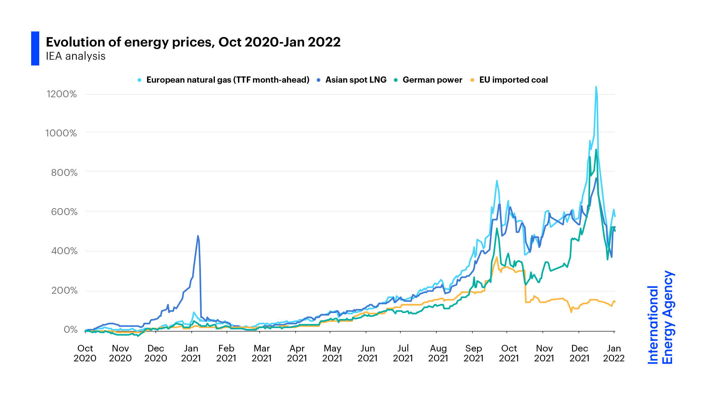

C NEWS
C.1 231018 The case against the US government’s big ‘blue hydrogen’ bet
St.John
Can a “clean hydrogen hub” spend hundreds of millions of dollars turning fossil gas into hydrogen and still be considered clean?
That’s the question that environmental groups and community activists are asking about the $7 billion in federal funding set to flow to hydrogen hub projects across the country. The hubs are meant to kick-start U.S. production of low- and zero-carbon hydrogen, an alternative fuel that could replace planet-warming fossil fuels in industries from heavy transportation to steelmaking.
Of the seven public-private consortiums selected to compete for this funding by the Biden administration on Friday, five plan significant investments in “blue hydrogen,” the practice of making hydrogen from fossil gas but capturing and storing the carbon emissions from the process. Today, almost all of the roughly 10 million metric tons of hydrogen produced in the U.S. per year is so-called “gray hydrogen,” which is made with fossil gas and no carbon capture, and used for refining as well as fertilizer and other chemicals production.
Can a “clean hydrogen hub” spend hundreds of millions of dollars turning fossil gas into hydrogen and still be considered clean?
That’s the question that environmental groups and community activists are asking about the $7 billion in federal funding set to flow to hydrogen hub projects across the country. The hubs are meant to kick-start U.S. production of low- and zero-carbon hydrogen, an alternative fuel that could replace planet-warming fossil fuels in industries from heavy transportation to steelmaking.
Of the seven public-private consortiums selected to compete for this funding by the Biden administration on Friday, five plan significant investments in “blue hydrogen,” the practice of making hydrogen from fossil gas but capturing and storing the carbon emissions from the process. Today, almost all of the roughly 10 million metric tons of hydrogen produced in the U.S. per year is so-called “gray hydrogen,” which is made with fossil gas and no carbon capture, and used for refining as well as fertilizer and other chemicals production.
C.2 221228 Sputtering Nuclear Sector
Canary Media
The U.S. nuclear power market continued to sputter in 2022 as it faced regulatory, technical and financial setbacks — despite solid support from the federal government.
This mirrors the global nuclear scene; plant closings and construction delays have resulted in nuclear falling to just 9.8 percent of global power generation in 2021, its lowest level since the 1980s, according to the World Nuclear Industry 2022 annual report.
The United States generates more nuclear power than any other country in the world, with about 95 gigawatts of capacity, followed by China, but construction of new plants has been plagued by cost and schedule overruns, as well as an inability to keep up with the plunging costs of natural gas and renewable energy sources. Still, nuclear power provides a crucial 20 percent of U.S. electricity from the 92 light-water reactors that were built in a seemingly unreplicable construction binge in the 1970s and ’80s.
Some of these plants are struggling financially, many are approaching their decommission dates, and the only new large reactors constructed in recent memory, at the Plant Vogtle in Georgia, have been calamitous money pits brimming with incompetence and even fraud.
C.3 221118 Floating Wind Farm
World’s largest floating wind farm just started producing power
Canary Media
The first of 11 floating wind turbines in Equinor’s project off Norway is now generating clean electricity — which will be used to power an oil platform.
Offshore wind development is surging globally as countries adopt ambitious climate change policies and wind equipment costs decline. The vast majority of today’s installations use fixed-bottom foundations to hoist turbines from relatively shallow seabeds. However, a small but quickly growing number of projects are using floating platforms and other buoyant technologies to generate wind power in deeper waters.
About 56 gigawatts of offshore wind capacity was in place worldwide at the end of 2021. Of that total, only 121 megawatts — or 0.2 percent — involved floating turbines
In the United States, the Biden administration aims to deploy 15 gigawatts of floating offshore wind capacity by 2035 — much of which will likely be installed off the coast of California.
Equinor has been leading on floating wind development since 2009, when it installed the world’s first floating turbine off the coast of Aberdeenshire, Scotland. The company is majority-owned by the Norwegian government and changed its name from Statoil to Equinor in 2018. After floating the first turbine, Equinor added four offshore turbines to complete the 30-megawatt Hywind Scotland pilot project, which Equinor says is the world’s first commercial floating offshore wind farm.
With the Hywind Tampen project, the company is expanding into its home waters. The wind farm is expected to meet about 35 percent of the fields’ electricity demand, reducing CO2 emissions by about 200,000 metric tons per year.
Canary Media (2022) World’s largest floating wind farm just started producing power
C.4 220505 Silicon Batteries
Canary Media
The German carmaker led a $400 million investment in American startup Group14 Technologies, which makes advanced batteries using silicon. Adding silicon to the anode (one of the key parts of a battery cell) could significantly improve the driving range and charge time of electric vehicles, two crucial metrics for their broader acceptance. But the technology is generally expected to be years away from widespread commercial adoption.
Group14 aims to move up that timeline — its silicon anodes are on track to get into electric vehicles by 2023, CEO and co-founder Rick Luebbe told Canary Media.
“Silicon batteries are here,” he said. “The technology is proven. Now it’s about scaling to meet the demand.”
Group14 already has a factory outside of Seattle that produces 120 tons of silicon-carbon composite per year. But the new Series C funding will bankroll construction of another factory in central Washington, which will produce enough battery materials for 600,000 EVs per year when it’s fully operational in late 2023. A South Korea facility jointly developed with SK Group is coming online this year.
Silicon anodes hold more energy than conventional graphite anodes. That inspired scientists to replace some or all of the graphite in the anode with silicon. Get Caught Up
But this improvement doesn’t come without problems. Silicon expands and contracts as the battery charges and discharges, and those fluctuations can damage the battery. The trick for companies including Group14 is to harness the energy capacity of silicon while minimizing the damage it causes.
Group14’s recipe, dubbed SCC55, uses “hard carbon-based scaffolding” to keep that silicon “in the most ideal form – amorphous, nano-sized, and carbon-encased,” according to the company’s website. In other words, the silicon sits in a miniscule scaffolding structure where it has room to expand and contract without weakening the structure of the anode, Luebbe explained.
Achieving an ideal anode requires years of complicated laboratory science. Group14 grew out of a company called EnerG2 that focused on nanoengineering synthetic carbons; that parent company was sold to BASF, and then Group14 was spun out in 2015 to apply that technological approach to silicon anodes.
Such scientific complexity usually harshes the vibes of venture investors hyped up on the prospect of quick software returns. But the prize in this case was particularly alluring. Silicon enthusiasts, Group14 included, claim that adding it to anodes can deliver 50 percent more energy density than today’s batteries. That could materialize as an EV that goes much farther on a single charge, or one that goes the same distance with a smaller, cheaper battery.
Canary (2022)Porsche investment could unlock up to a 50% boost in EV battery density
C.5 220116 Europe’s Energy Crisis
Birol
In Europe, governments should make natural gas storage part of their security of supply risk assessments, at both a national and regional level, including risks linked to the control of storage by entities from non-EU countries. And regulations should be improved to ensure that storage levels are adequate to cover end-user needs, with mandatory minimum storage obligations assigned to all commercial operators with gas retail portfolios. In addition, provisions on transparency and congestion management can help to ensure optimal utilisation of available storage capacity.

On a global level, scaling up domestically sourced low-carbon energy supplies provides an opportunity to bring down emissions while at the same time tackling energy security issues related to fossil fuel imports and market volatility. However, potential energy security vulnerabilities do not disappear in a renewables-rich and more electrified energy system. Policy makers need to pay close attention to new clean energy supply chains, in particular the geographical concentration of many critical minerals – such as lithium, cobalt and rare earth elements – that are crucial components of many clean energy technologies.
In my view, today’s situation underlines the fact that energy systems face significant risks if they rely too much on one supplier for a key element. Today, it is natural gas; tomorrow, it could be something else, such as lithium.
Birol (2022) Europe and the world need to draw the right lessons from today’s natural gas crisis
C.6 211207 Novel lithium-carbon battery chemistry
A prototype battery-powered moped that can recharge in as little as 90 seconds could be on the road next year.
The vehicle will be used to test a novel lithium-carbon battery developed by U.K.-based Allotrope Energy and unveiled in September by Mahle Powertrain, a British subsidiary of one of the world’s largest automotive suppliers.
The fast-charging capacity is a result of the lithium-carbon battery’s high specific power, which tops 15 kilowatts per kilogram, according to Allotrope. This compares to a maximum of around 10 kW per kilogram for other lithium-ion chemistries.
The fact that lithium-carbon batteries had not already been developed might seem odd given the battery industry’s keenness for novel chemistries. The holdup was because an essential component of the chemistry, nanoporous carbon, only recently began being used in battery development.
In theory, the battery could be fully charged in just 60 seconds. The 90-second charging time is due to the limitations of charging infrastructure rather than the battery.
The reason why it’s a 90-second charging is a buffered chargepoint. The charger has a battery inside it and the battery dumps its energy into the moped.
For the larger batteries used in electric cars, there simply isn’t enough grid capacity to cope with lithium-carbon batteries. That’s why it’s unlikely the chemistry will be scaled up for larger vehicles.
Another advantage of the lithium-carbon chemistry is that it does not use cobalt or nickel, two elements that pose supply-chain concerns in some other lithium-ion battery types.
C.8 210629 Equinor triple UK hydrogen
Norway’s state oil company Equinor will triple its UK hydrogen output, after setting out plans to build the world’s biggest hydrogen production plant with carbon capture and storage technology near Hull.
Equinor plans to produce clean-burning “blue hydrogen” to supply the Keadby gas power plant in Lincolnshire, owned by energy company SSE, making it the world’s first full-scale power plant to burn pure hydrogen to generate electricity.
Anders Opedal, the chief executive of Equinor, said on Monday that the company plans to produce another 1,200MW of blue hydrogen in the Humber area to help supply the Keadby hydrogen power plant.
C.9 210604 Crane Battery
Energy Vault stores clean electricity by stacking blocks of concrete.
Energy Vault completed its first commercial-scale project in July 2020, when it connected a 5 megawatt/ 35 megawatt-hour block-stacking tower to the Swiss grid, the company said. The system’s six crane arms use electricity to hoist purpose-built concrete blocks and stack them into a tower; rapidly lowering the blocks discharges electricity.
C.10 210427 HeatCrete Thermal Storage
Norway-headquartered EnergyNest makes its own branded ThermalBattery product which essentially stores heat in a patented form of concrete, which it has dubbed Heatcrete. A heat transfer fluid (HTF) at high temperatures passes through steel pipes cast into the ‘battery’, in technology that the company claims enables storage of energy at very low CapEx cost, using low-cost materials in a simple design. EnergyNest has previously said the Heatcrete materials can last 30 to 50 years of use without degradation.
An investment worth €110 million (US$131.5 million) has been agreed by ‘thermal battery’ manufacturer EnergyNest which would make infrastructure equity investor Infracapital its biggest shareholder.
Infracapital’s investment will be used by the thermal energy storage company towards delivering financed turnkey energy storage solutions in a range of international regions,
EnergyNest made its first large-scale deployment in a research and demonstration project in Abu Dhabi with Masdar Institute, a 1MWth system developed between 2013 and late 2015. As with providers of other novel energy storage technologies, the company has been seeking to commercialise its products and offerings over the past few years and claimed that 2020 was its strongest year to date.
In January last year Energy-Storage.news reported that the company was deploying a multi-megawatt solution at a brick making factory in Austria and in June announced a partnership with Siemens Energy to develop commercialised solutions — the pair had already worked together previously at the Abu Dhabi pilot project. A project with Italian energy major Eni at a solar energy plant is also already underway and another with Norwegian chemical company Yara is in development to produce steam for industrial use.
C.11 210121 “Gas is over”
Europe needs to acknowledge that its future is no longer with fossil fuels, said the President of the European Investment Bank as he presented the bank’s 2020 results on Wednesday (20 January).
“To put it mildly, gas is over,” Dr Werner Hoyer said at a press conference on the EIB’s annual results.